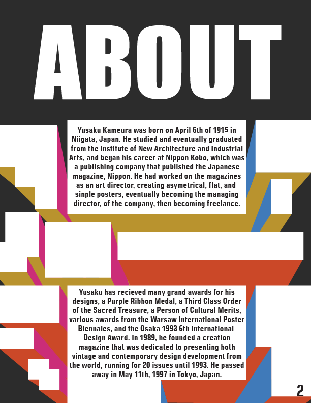
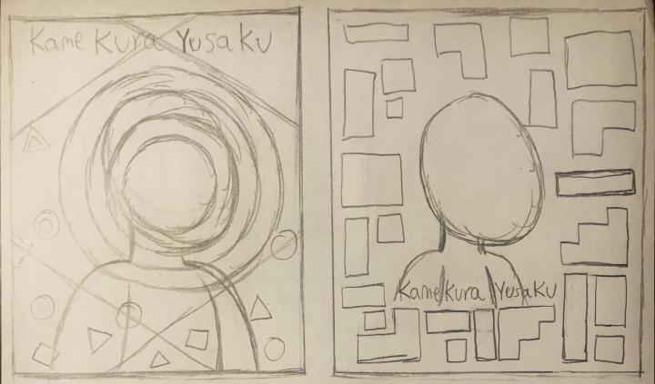

Yusaku Kamekura Booklet
This project shows the process work and final design for the booklet on Yusaku Kamekura, a historical graphic designer. The booklet is meant to detail his history, his works in the field, and the greatest achievements for graphic design, while also reflecting Yusaku Kamekura in the design of the booklet.
Front & Back cover
With the front cover, I used one of the sketches previously drawn as a basis for the front cover, then combined some aspects from 2 different works that were made by Yusaku Kamekura, to create the design for the cover and back cover of the booklet. For the title on the front cover, I had went and found a font that was similar/exaclty like the font that was used in his work that included text, and used that font for the title of the booket.
Booklet pages

For the pages in the booklet, they were based off of Yusaku Kamekura's previous works, while having a slight change from the original work. For the about page, I had used the previously drawn sketch for that page as a basis for how to design it, making some slight changes. The rest of the pages include an introduction page, a timeline page, his impact on graphic design, his influences, and a page showcasing his work.
Sketches

When sketching out concepts for the front cover of the booklet, I wanted it to feel like something reminiscent of one of Yusaku Kamekura's works, while still feeling completely unique from them in its own way. I had initally also wanted to put him on the front cover as well, surrounded by all of the components that is present in a lot of his work, however I ended up deciding to go with something more simpler and not as complicated. I did a quick sketch on what I wanted the about page to look like, the design being based on one of his works.
Conclusion
This project in terms of design was mostly smooth, however some issues I had ran into during the development of the booklet, was that it was somewhat hard to find ways of translating certain pages to be reminicent of one of Yusaku's works, since some of the content I had to include didn't fit well with the rest of his work. While I do think that some pages can be revised or changed, I would say this project was pretty satisfactory.
Mockups